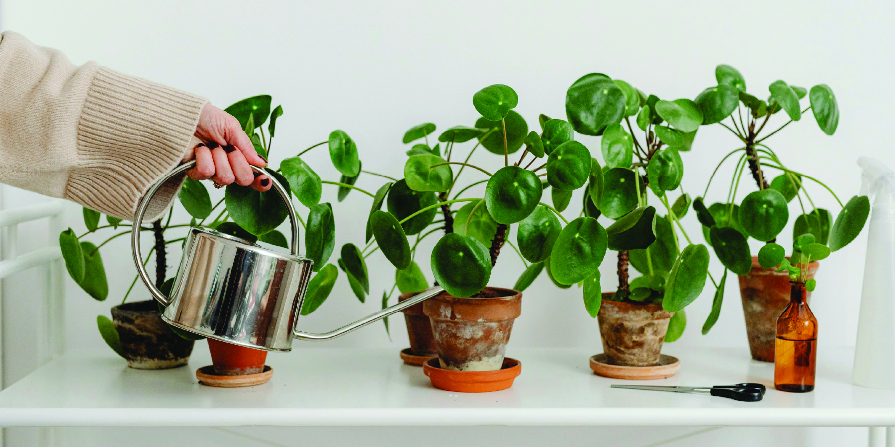
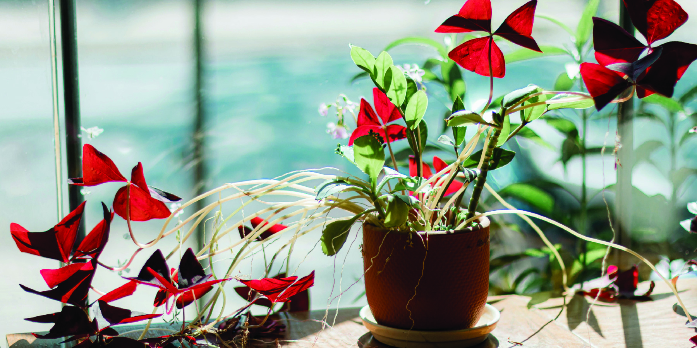
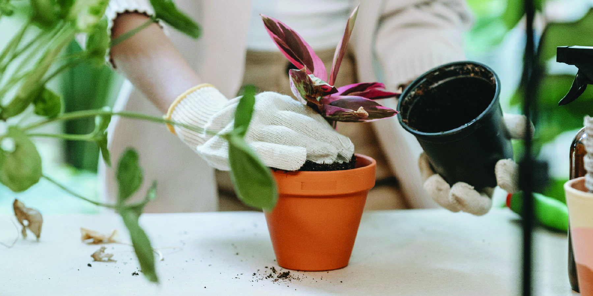
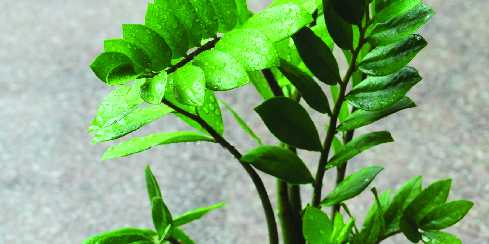
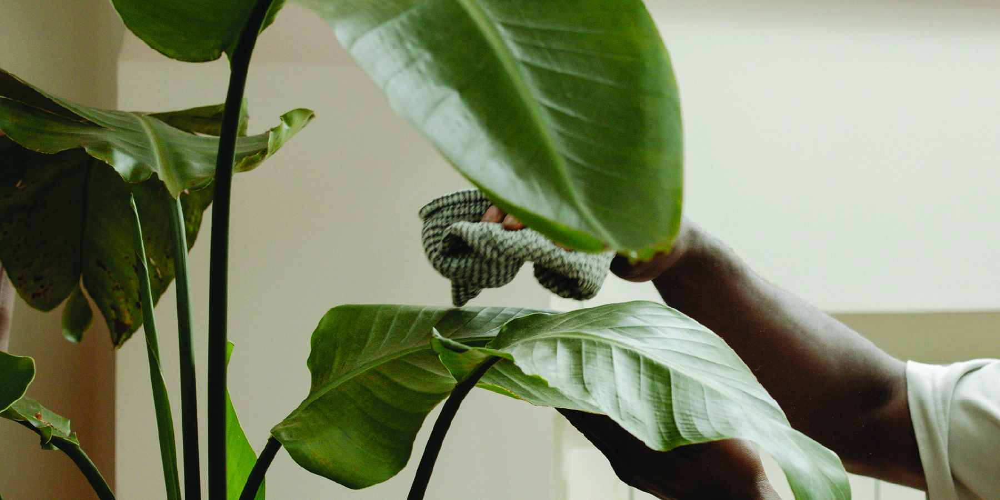

Plant Care
Keep your plants happy, healthy, and thriving with these simple care essentials! Whether you're a newbie or a green thumb in the making, these tips will help you grow with confidence.
Watering Wisely
Overwatering is one of the most common plant mistakes! Most houseplants prefer their soil to dry out slightly between waterings.
- Check before you pour! Stick your finger about an inch into the soil—if it's dry, it's time to water.
- Use room temperature water and avoid letting water sit in the saucer.
- It's better to underwater than overwater—your plant can recover from thirst easier than from root rot!
Let There Be Light
Each plant has different light needs. Pay attention to where you place them!
- Bright, indirect light: Great for most houseplants like pothos and philodendrons.
- Low light: Snake plants, ZZ plants, and ferns can handle shady corners.
- Direct light: Cacti and succulents love a sunny windowsill.
- Rotate your plants every couple weeks so they grow evenly toward the light.
Repotting & Soil
When your plant outgrows its home or the soil gets compacted, it's time for a change!
- Signs it needs repotting: Roots growing out the drainage holes, slow growth, or water rushing straight through.
- Use the right soil: Cacti and succulents need gritty soil; tropicals prefer moisture-retaining mixes.
- Spring is the best time to repot—it's when most plants start growing again!
Humidity & Environment
Some plants (especially tropicals) love a bit of humidity in the air.
- Raise humidity with: A humidifier, pebble trays, or grouping plants together.
- Watch out for drafts: Keep your plants away from heaters, AC vents, or cold windows.
- Browning leaf tips often mean dry air—your plant might be craving more humidity!
Pest Patrol
Keep an eye out for tiny intruders like gnats, spider mites, or mealybugs.
- Spot them early: Check under leaves and along stems during your regular care.
- Treat gently: Wipe with a damp cloth, use neem oil, or rinse with water.
- Healthy plants are less likely to get pests—stick to a regular care routine!